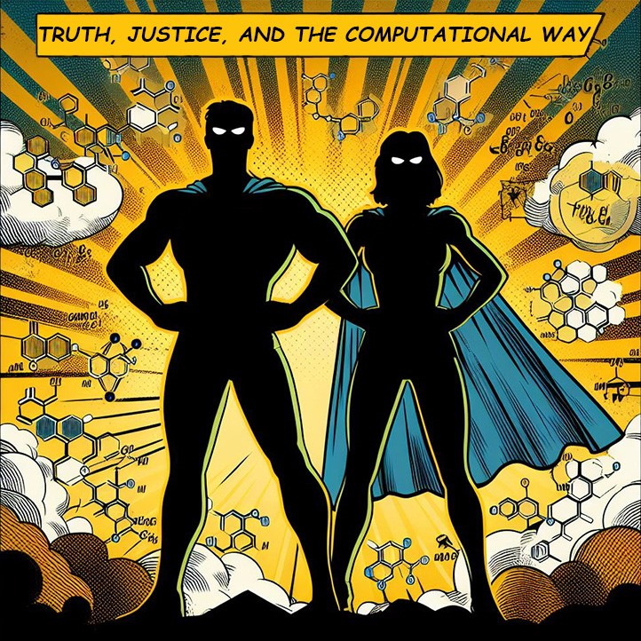

We Are Hiring!
Fully-funded PhD and Postdoctoral positions are available in our group. To apply, send your letter of motivation and CV to our group email, or click on the contact button.

Making Sense of Aromaticity
The COMPAS Project
Data-Driven Molecular Design
Reactivity and Mechanisms
Our group studies the relationship between various manifestations of aromaticity (e.g., energetic, geometric, magnetic) and other molecular properties (e.g., HOMO-LUMO gap, spin density). The uncovered structure-property relationships can advance rational design of molecules with targeted properties. In addition, we develop models and methods for visualization, interpretation, and prediction, which enable other chemists to gain chemical insight into their molecules of interest.
The chemical space of aromatic molecules is vast and diverse, which presents an opportunity for data-driven investigation. To facilitate this, our group has established The COMPAS Project: the first COMputational database of Polycyclic Aromatic Systems. We are actively expanding this chemical database in a methodical manner using high-throughput computational chemistry methods.
Polycyclic aromatic systems are well-known for being the workhorses of organic electronics. Our group is interested in using Machine Learning and Deep Learning models to enable the design and/or identification of new polycyclic aromatic molecules that can provide improved performance and stability.
The COMPAS Project is one component of this avenue of investigation; the second is the development of new chemical representations that are amenable to interpretation, and which allow exploration of the data for structure-property relationships.
Together with our experimental collaborators, we are studying the relationship between the aromaticity of molecules and their reactivity. Among our active areas of investigation:
• Ligand non-innocence in organometallic catalysts (with the de Ruiter Group, Technion)
• Novel helical structures containing five-membered rings (with the Alabugin Group, Florida State University)
• The interplay between charge and aromaticity in aromatic-alkali metal complexes (with the Petrukhina Group, SUNY Albany)
• Rational design of indenofluorenes with enhances antiaromaticity (with the Haley Group, University of Oregon)